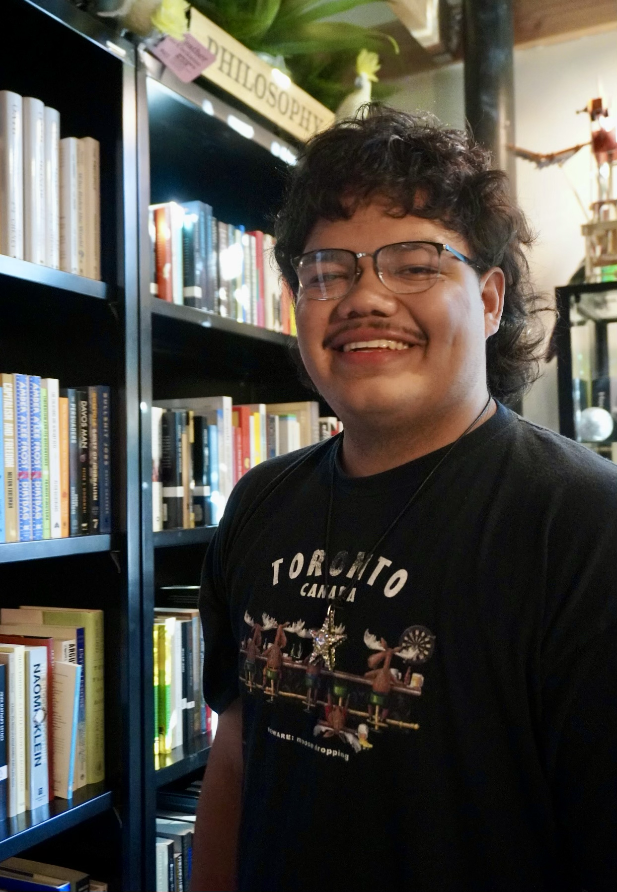

Angel Sosa Llanos

I am a senior at Emory University majoring in Political Science (Honors) with a minor in Latinx Studies, and I plan to pursue a doctoral degree in Political Science.
My research interests center on American politics and political behavior, with a focus on Latino politics, voting behavior, immigration, and racialized political violence.
I have worked with Bernard Fraga, Jeffrey Staton, Kiela Crabtree, and Alex Bolton. I am an alum of the Ralph Bunche Summer Institute, a Michigan Eldersveld Emerging Scholar, and a recipient of the 2026–2027 APSA Diversity Fellowship.
You can reach me at angel [dot] sosa [at] emory [dot] edu.